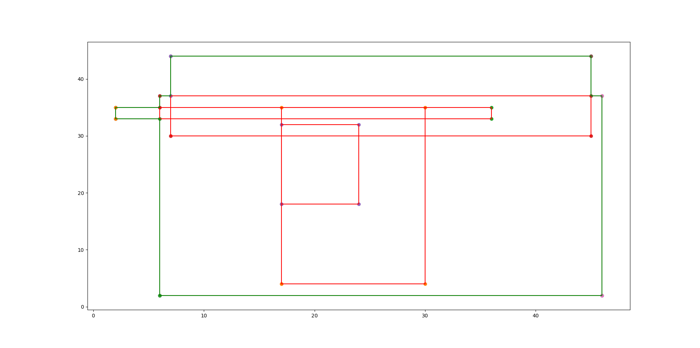

Input 8
5
6 2
46 37
17 4
30 35
2 33
36 35
7 30
45 44
17 18
24 32
Output 8
Measure = 1674
Number of Contour Lines = 12
Contour Line Segments:-
6 2 46 2
2 33 6 33
2 35 6 35
45 37 46 37
6 37 7 37
7 44 45 44
2 33 2 35
6 2 6 33
6 35 6 37
7 37 7 44
45 37 45 44
46 2 46 37
Contour Length = 172
